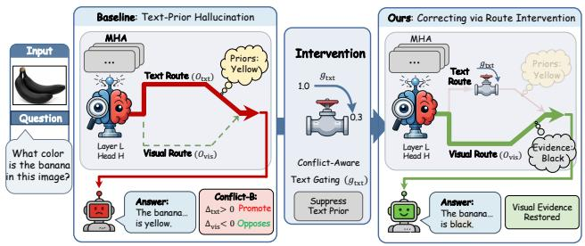

Figureure 2 · Overview of our CRG frameworkFigure 2. Overview of our CRG framework. Step 1 computes modal causal effects for each attention head by separating visual and textual components and measuring their contributions. Step 2 identifies conflicts by comparing the signs of visual and textual effects, distinguishing Agreement vs. Conflict (A/B), and selects the top-k conflicting heads for intervention. Step 3 applies head gating, where Conflict-A heads receive mild gating and Conflict-B heads receive strong gating, reducing language-prior dominance while keeping image-grounded evidence.这张图概括 Causal Route Gating 的整体方法流程。阅读时先看模块之间传递的训练信号，再看作者如何把目标拆成可优化的子问题。

Figureure 1 · When language priors override visual inputs, the baseline model tends Figure 1. When language priors override visual inputs, the baseline model tends to produce hallucinated predictions (left). To address this, a conflict-aware intervention applies text-route gating to suppress language priors (middle), enabling the model to correctly rely on visual evidence after intervention (right).这张图来自论文 PDF 的结构化抽取。当前用于辅助理解 Causal Route Gating 的方法或实验，请结合正文精读段落一起看。
核心问题
它能帮助判断 VL 预训练后的模型是否真正利用视觉表征，而不是靠语言先验过拟合。
方法拆解
把注意力 head 分解为 visual route 与 text route，用一次 forward/gradient 估计 token-level effect，只抑制 prior-dominant text route，尽量保留视觉路由。